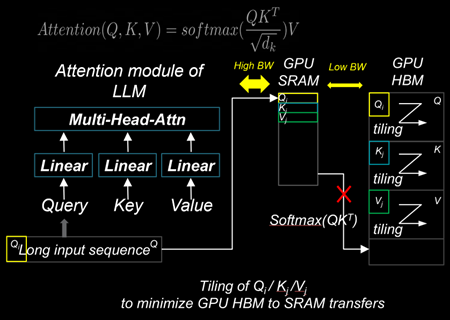

Model acceleration libraries#
2024-09-09
21 min read time
This section discusses model acceleration techniques and libraries to improve memory efficiency and performance.
Flash Attention 2#
Flash Attention is a technique designed to reduce memory movements between GPU SRAM and high-bandwidth memory (HBM). By using a tiling approach, Flash Attention 2 improves memory locality in the nested loops of query, key, and value computations within the Attention modules of LLMs. These modules include Multi-Head Attention (MHA), Group-Query Attention (GQA), and Multi-Query Attention (MQA). This reduction in memory movements significantly decreases the time-to-first-token (TTFT) latency for large batch sizes and long prompt sequences, thereby enhancing overall performance.
Installing Flash Attention 2#
ROCm provides two different implementations of Flash Attention 2 modules. They can be deployed interchangeably:
ROCm Composable Kernel (CK) Flash Attention 2
OpenAI Triton Flash Attention 2
To install CK Flash Attention 2, use the following commands.
# Install from source
git clone https://github.com/ROCm/flash-attention.git
cd flash-attention/
GPU_ARCHS=gfx942 python setup.py install #MI300 series
Hugging Face Transformers can easily deploy the CK Flash Attention 2 module by passing an argument
attn_implementation="flash_attention_2" in the from_pretrained class.
import torch
from transformers import AutoModelForCausalLM, AutoTokenizer
device = torch.device("cuda:0" if torch.cuda.is_available() else "cpu")
model_name = "NousResearch/Meta-Llama-3-8B"
tokenizer = AutoTokenizer.from_pretrained(model_name, torch_dtype=torch.float16, use_fast=False)
inputs = tokenizer('Today is', return_tensors='pt').to(device)
model_eager = AutoModelForCausalLM.from_pretrained(model_name, torch_dtype=torch.float16, attn_implementation="eager").cuda(device)
model_ckFAv2 = AutoModelForCausalLM.from_pretrained(model_name, torch_dtype=torch.float16, attn_implementation="flash_attention_2").cuda(device)
print("eager GQA: ", tokenizer.decode(model_eager.generate(**inputs, max_new_tokens=10)[0], skip_special_tokens=True))
print("ckFAv2 GQA: ", tokenizer.decode(model_ckFAv2.generate(**inputs, max_new_tokens=10)[0], skip_special_tokens=True))
# eager GQA: Today is the day of the Lord, and we are the
# ckFAv2 GQA: Today is the day of the Lord, and we are the
The Triton Flash Attention 2 module is implemented in Python and uses OpenAI’s JIT compiler. This module has been upstreamed into the vLLM serving toolkit, discussed in :doc:’llm-inference-frameworks’.
To install Triton Flash Attention 2 and run the benchmark, use the following commands.
# Install from the source pip uninstall pytorch-triton-rocm triton -y git clone https://github.com/ROCm/triton.git cd triton/python GPU_ARCHS=gfx942 python setup.py install #MI300 series pip install matplotlib pandas
To test, run the Triton Flash Attention 2 performance benchmark.
# Test the triton FA v2 kernel python https://github.com/ROCm/triton/blob/triton-mlir/python/perf-kernels/flash-attention.py # Results (Okay to release TFLOPS number ???) fused-attention-fwd-d128: BATCH HQ HK N_CTX_Q N_CTX_K TFLOPS 0 16.0 16.0 16.0 1024.0 1024.0 287.528411 1 8.0 16.0 16.0 2048.0 2048.0 287.490806 2 4.0 16.0 16.0 4096.0 4096.0 345.966031 3 2.0 16.0 16.0 8192.0 8192.0 361.369510 4 1.0 16.0 16.0 16384.0 16384.0 356.873720 5 2.0 48.0 48.0 1024.0 1024.0 216.916235 6 2.0 48.0 48.0 2048.0 1024.0 271.027578 7 2.0 48.0 48.0 4096.0 8192.0 337.367372 8 2.0 48.0 48.0 8192.0 4096.0 363.481649 9 2.0 48.0 48.0 16384.0 8192.0 375.013622 10 8.0 16.0 16.0 1989.0 15344.0 321.791333 11 4.0 16.0 16.0 4097.0 163.0 122.104888 12 2.0 16.0 16.0 8122.0 2159.0 337.060283 13 1.0 16.0 16.0 16281.0 7.0 5.234012 14 2.0 48.0 48.0 1021.0 1020.0 214.657425 15 2.0 48.0 48.0 2001.0 2048.0 314.429118 16 2.0 48.0 48.0 3996.0 9639.0 330.411368 17 2.0 48.0 48.0 8181.0 1021.0 324.614980
xFormers#
xFormers also improves the performance of attention modules. Although xFormers attention performs very similarly to Flash Attention 2 due to its tiling behavior of query, key, and value, it’s widely used for LLMs and Stable Diffusion models with the Hugging Face Diffusers library.
Installing CK xFormers#
Use the following commands to install CK xFormers.
# Install from source
git clone https://github.com/ROCm/xformers.git
cd xformers/
git submodule update --init --recursive
PYTORCH_ROCM_ARCH=gfx942 python setup.py install #Instinct MI300-series
PyTorch built-in acceleration#
PyTorch compilation mode synthesizes the model into a graph and then lowers it to prime operators. These operators are compiled using TorchInductor, which uses OpenAI Triton as a building block for GPU acceleration. One advantage of PyTorch compilation mode is that its GPU kernels are written in Python, making modifying and extending them easier. PyTorch compilation mode often delivers higher performance, as model operations are fused before runtime, which allows for easy deployment of high-performance kernels.
PyTorch compilation#
To utilize the PyTorch compilation mode, specific layers of the model
must be explicitly assigned as compilation targets. In the case of LLM,
where autoregressive token decoding generates dynamically changing
key/value sizes, limiting the key/value size to a static dimension,
max_cache_length, is necessary to utilize the performance benefits
of the PyTorch compilation.
# Sample script to run LLM with the static key-value cache and PyTorch compilation
from transformers import AutoModelForCausalLM, AutoTokenizer, StaticCache
import torch
from typing import Optional
import os
device = torch.device("cuda:0" if torch.cuda.is_available() else "cpu")
os.environ["TOKENIZERS_PARALLELISM"] = "false"
model_name = "NousResearch/Meta-Llama-3-8B"
prompts = []
for b in range(1):
prompts.append("New york city is where "
)
tokenizer = AutoTokenizer.from_pretrained(model_name)
model = AutoModelForCausalLM.from_pretrained(model_name, torch_dtype=torch.float16).to(device).eval()
inputs = tokenizer(prompts, return_tensors="pt").to(model.device)
def decode_one_tokens(model, cur_token, input_pos, cache_position):
logits = model(cur_token, position_ids=input_pos, cache_position=cache_position, return_dict=False, use_cache=True)[0]
new_token = torch.argmax(logits[:, -1], dim=-1)[:, None]
return new_token
batch_size, seq_length = inputs["input_ids"].shape
# Static key-value cache
max_cache_length = 1024
max_new_tokens = 10
model._setup_cache(StaticCache, batch_size, max_cache_len=max_cache_length)
cache_position = torch.arange(seq_length, device=device)
generated_ids = torch.zeros(batch_size, seq_length + max_new_tokens + 1, dtype=torch.int, device=device)
generated_ids[:, cache_position] = inputs["input_ids"].to(device).to(torch.int)
logits = model(**inputs, cache_position=cache_position, return_dict=False, use_cache=True)[0]
next_token = torch.argmax(logits[:, -1], dim=-1)[:, None]
# torch compilation
decode_one_tokens = torch.compile(decode_one_tokens, mode="max-autotune-no-cudagraphs",fullgraph=True)
generated_ids[:, seq_length] = next_token[:, 0]
cache_position = torch.tensor([seq_length + 1], device=device)
with torch.no_grad():
for _ in range(1, max_new_tokens):
with torch.backends.cuda.sdp_kernel(enable_flash=False, enable_mem_efficient=False, enable_math=True):
next_token = decode_one_tokens(model, next_token.clone(), None, cache_position)
generated_ids[:, cache_position] = next_token.int()
cache_position += 1
PyTorch TunableOp#
ROCm PyTorch (2.2.0 and later) allows users to use high-performance ROCm GEMM kernel libraries through PyTorch’s built-in TunableOp options. This enables users to automatically pick up the best-performing GEMM kernels from rocBLAS and hipBLASLt libraries during runtime.
During warm-up runs or offline profiling steps, users can create a GEMM Table
that enumerates the kernel information. During the model’s run, the best-performing kernel substitutes
torch.nn.functional.linear(input, weight, bias=None) with the kernel specified in the GEMM table. The
Tunable GitHub
page describes the options.
# To turn on TunableOp, simply set this environment variable
export PYTORCH_TUNABLEOP_ENABLED=1
# Python
import torch
import torch.nn as nn
import torch.nn.functional as F
A = torch.rand(100, 20, device="cuda")
W = torch.rand(200, 20, device="cuda")
Out = F.linear(A, W)
print(Out.size())
# tunableop_results0.csv
Validator,PT_VERSION,2.4.0
Validator,ROCM_VERSION,6.1.0.0-82-5fabb4c
Validator,HIPBLASLT_VERSION,0.7.0-1549b021
Validator,GCN_ARCH_NAME,gfx942:sramecc+:xnack-
Validator,ROCBLAS_VERSION,4.1.0-cefa4a9b-dirty
GemmTunableOp_float_TN,tn_200_100_20,Gemm_Rocblas_32323,0.00669595
Learn more about optimizing kernels with TunableOp in Optimizing Triton kernels.
FBGEMM and FBGEMM_GPU#
FBGEMM (Facebook General Matrix Multiplication) is a low-precision, high-performance CPU kernel library for matrix-matrix multiplications and convolutions. It is used for server-side inference and as a back end for PyTorch quantized operators. FBGEMM offers optimized on-CPU performance for reduced precision calculations, strong performance on native tensor formats, and the ability to generate high-performance shape- and size-specific kernels at runtime.
FBGEMM_GPU collects several high-performance PyTorch GPU operator libraries for use in training and inference. It provides efficient table-batched embedding functionality, data layout transformation, and quantization support.
For more information about FBGEMM and FBGEMM_GPU, see the PyTorch FBGEMM GitHub and the PyTorch FBGEMM documentation. The Meta blog post about FBGEMM provides additional background about the library.
Installing FBGEMM_GPU#
Installing FBGEMM_GPU consists of the following steps:
Set up an isolated Miniconda environment
Install ROCm using Docker or the package manager
Install the nightly PyTorch build
Complete the pre-build and build tasks
Note
FBGEMM_GPU doesn’t require the installation of FBGEMM. To optionally install FBGEMM, see the FBGEMM install instructions.
Set up the Miniconda environment#
To install Miniconda, use the following commands.
Install a Miniconda environment for reproducible builds. All subsequent commands run inside this environment.
export PLATFORM_NAME="$(uname -s)-$(uname -m)" # Set the Miniconda prefix directory miniconda_prefix=$HOME/miniconda # Download the Miniconda installer wget -q "https://repo.anaconda.com/miniconda/Miniconda3-latest-${PLATFORM_NAME}.sh" -O miniconda.sh # Run the installer bash miniconda.sh -b -p "$miniconda_prefix" -u # Load the shortcuts . ~/.bashrc # Run updates conda update -n base -c defaults -y conda
Create a Miniconda environment with Python 3.12:
env_name=<ENV NAME> python_version=3.12 # Create the environment conda create -y --name ${env_name} python="${python_version}" # Upgrade PIP and pyOpenSSL package conda run -n ${env_name} pip install --upgrade pip conda run -n ${env_name} python -m pip install pyOpenSSL>22.1.0
Install additional build tools:
conda install -n ${env_name} -y \ click \ cmake \ hypothesis \ jinja2 \ make \ ncurses \ ninja \ numpy \ scikit-build \ wheel
Install the ROCm components#
FBGEMM_GPU can run in a ROCm Docker container or in conjunction with the full ROCm installation. The Docker method is recommended because it requires fewer steps and provides a stable environment.
To run FBGEMM_GPU in the Docker container, pull the Minimal Docker image for ROCm. This image includes all preinstalled ROCm packages required to integrate FBGEMM. To pull and run the ROCm Docker image, use this command:
# Run for ROCm 6.2.0
docker run -it --network=host --shm-size 16G --device=/dev/kfd --device=/dev/dri --group-add video \
--cap-add=SYS_PTRACE --security-opt seccomp=unconfined --ipc=host rocm/rocm-terminal:6.2 /bin/bash
Note
The Full Docker image for ROCm, which includes all ROCm packages, can also be used. However, it results in a very large container, so the minimal Docker image is recommended.
You can also install ROCm using the package manager. FBGEMM_GPU requires the installation of the full ROCm package.
For more information, see the ROCm installation guide.
The ROCm package also requires the MIOpen component as a dependency.
To install MIOpen, use the apt install command.
apt install hipify-clang miopen-hip miopen-hip-dev
Install PyTorch#
Install PyTorch using pip for the most reliable and consistent results.
Install the nightly PyTorch build using
pip.# Install the latest nightly, ROCm variant conda run -n ${env_name} pip install --pre torch --index-url https://download.pytorch.org/whl/nightly/rocm6.2/
Ensure PyTorch loads correctly. Verify the version and variant of the installation using an
importtest.# Ensure that the package loads properly conda run -n ${env_name} python -c "import torch.distributed" # Verify the version and variant of the installation conda run -n ${env_name} python -c "import torch; print(torch.__version__)"
Perform the prebuild and build#
Clone the FBGEMM repository and the relevant submodules. Use
pipto install the components inrequirements.txt. Run the following commands inside the Miniconda environment.# Select a version tag FBGEMM_VERSION=v0.8.0 # Clone the repo along with its submodules git clone https://github.com/pytorch/FBGEMM.git --branch=v0.8.0 --recursive fbgemm_${FBGEMM_VERSION} # Install additional required packages for building and testing cd fbgemm_${FBGEMM_VERSION}/fbgemm_gpu pip install requirements.txt
Clear the build cache to remove stale build information.
# !! Run in fbgemm_gpu/ directory inside the Conda environment !! python setup.py clean
Set the wheel build variables, including the package name, Python version tag, and Python platform name.
# Set the package name depending on the build variant export package_name=fbgemm_gpu_rocm # Set the Python version tag. It should follow the convention `py<major><minor>`, # for example, Python 3.12 --> py312 export python_tag=py312 # Determine the processor architecture export ARCH=$(uname -m) # Set the Python platform name for the Linux case export python_plat_name="manylinux2014_${ARCH}"
Build FBGEMM_GPU for the ROCm platform. Set
ROCM_PATHto the path to your ROCm installation. Run these commands from thefbgemm_gpu/directory inside the Miniconda environment.# !! Run in the fbgemm_gpu/ directory inside the Conda environment !! export ROCM_PATH=</path/to/rocm> # Build for the target architecture of the ROCm device installed on the machine (for example, 'gfx942;gfx90a') # See :doc:`The Linux system requirements <../../reference/system-requirements>` for a list of supported GPUs. export PYTORCH_ROCM_ARCH=$(${ROCM_PATH}/bin/rocminfo | grep -o -m 1 'gfx.*') # Build the wheel artifact only python setup.py bdist_wheel \ --package_variant=rocm \ --python-tag="${python_tag}" \ --plat-name="${python_plat_name}" \ -DHIP_ROOT_DIR="${ROCM_PATH}" \ -DCMAKE_C_FLAGS="-DTORCH_USE_HIP_DSA" \ -DCMAKE_CXX_FLAGS="-DTORCH_USE_HIP_DSA" # Build and install the library into the Conda environment python setup.py install \ --package_variant=rocm \ -DHIP_ROOT_DIR="${ROCM_PATH}" \ -DCMAKE_C_FLAGS="-DTORCH_USE_HIP_DSA" \ -DCMAKE_CXX_FLAGS="-DTORCH_USE_HIP_DSA"
Post-build validation#
After building FBGEMM_GPU, run some verification checks to ensure the build is correct. Continue
to run all commands inside the fbgemm_gpu/ directory inside the Miniconda environment.
The build process generates many build artifacts and C++ templates, so it is important to confirm no undefined symbols remain.
# !! Run in fbgemm_gpu/ directory inside the Conda environment !! # Locate the built .SO file fbgemm_gpu_lib_path=$(find . -name fbgemm_gpu_py.so) # Check that the undefined symbols don't include fbgemm_gpu-defined functions nm -gDCu "${fbgemm_gpu_lib_path}" | sort
Verify the referenced version number of
GLIBCXXand the presence of certain function symbols:# !! Run in fbgemm_gpu/ directory inside the Conda environment !! # Locate the built .SO file fbgemm_gpu_lib_path=$(find . -name fbgemm_gpu_py.so) # Note the versions of GLIBCXX referenced by the .SO # The libstdc++.so.6 available on the install target must support these versions objdump -TC "${fbgemm_gpu_lib_path}" | grep GLIBCXX | sed 's/.*GLIBCXX_\([.0-9]*\).*/GLIBCXX_\1/g' | sort -Vu | cat # Test for the existence of a given function symbol in the .SO nm -gDC "${fbgemm_gpu_lib_path}" | grep " fbgemm_gpu::merge_pooled_embeddings(" nm -gDC "${fbgemm_gpu_lib_path}" | grep " fbgemm_gpu::jagged_2d_to_dense("
Testing FBGEMM#
FBGEMM includes tests and benchmarks to validate performance. To run these tests, you must use ROCm 5.7 or a more recent version on the host and container. To run FBGEMM tests, follow these instructions:
# !! Run inside the Conda environment !!
# From the /fbgemm_gpu/ directory
cd test
export FBGEMM_TEST_WITH_ROCM=1
# Enable for debugging failed kernel executions
export HIP_LAUNCH_BLOCKING=1
# Run the test
python -m pytest -v -rsx -s -W ignore::pytest.PytestCollectionWarning split_table_batched_embeddings_test.py
To run the FBGEMM_GPU uvm test, use these commands. These tests only support the AMD MI210 and
more recent accelerators.
# Run this inside the Conda environment from the /fbgemm_gpu/ directory
export HSA_XNACK=1
cd test
python -m pytest -v -rsx -s -W ignore::pytest.PytestCollectionWarning ./uvm/uvm_test.py